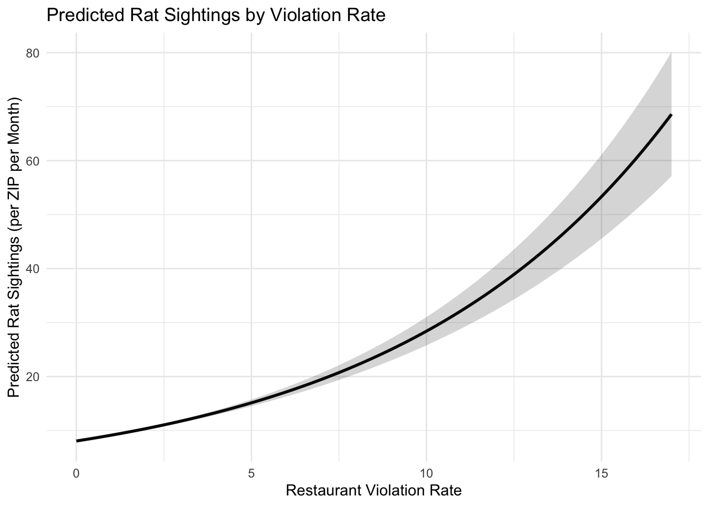
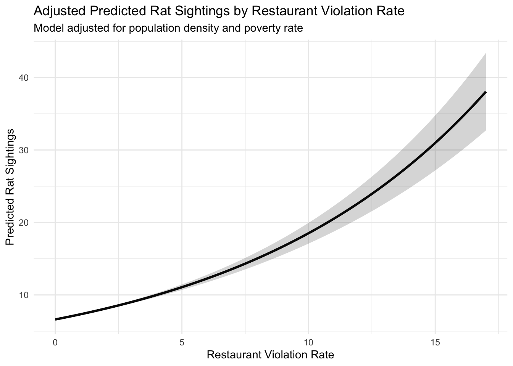
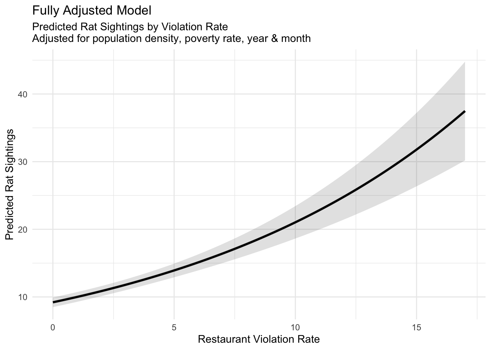
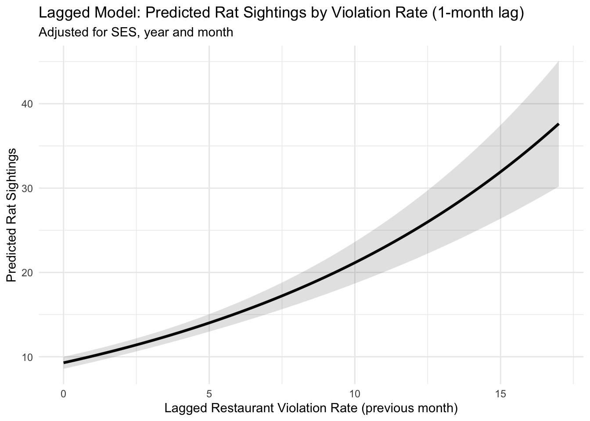
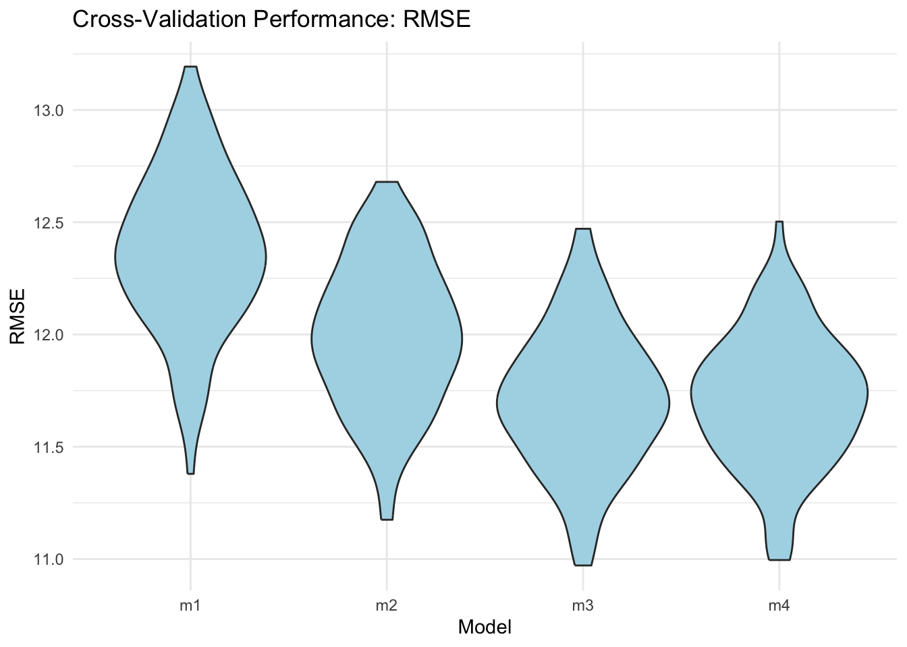

Modelling
library(tidyverse)
library(readr)
library(janitor)
library(dplyr)
library(ggplot2)
library(readxl)
library(sf)
library(spdep)
library(tigris)
library(lubridate)
library(MASS)
library(broom)
library(knitr)Model Objective
We used statistical modeling to examine whether changes in restaurant sanitation conditions are associated with rat sighting over time at the ZIP–month level across New York City.
H0 (null hypothesis): There is no association between violation rate and rat sighting counts at the ZIP–month level. \[ H_0: \beta_1 = 0 \;\Rightarrow\; IRR = 1 \]
H1 (alternative hypothesis): Higher violation rates are associated with higher rat sighting counts. \[ H_1: \beta_1 > 0 \;\Rightarrow\; IRR > 1 \]
Outcome and Predictors
Outcome rat_count_zip_month: monthly
rat sighting count per ZIP code
Main Exposure: violation_rate: proxy
variable in our model to represent restaurant sanitation in zip level,
so we created this ratio of violation to inspections within each ZIP
code and year-month. \[
\text{violation_rate} =
\frac{\text{violation_count_zip_month}}{\text{inspection_count_zip_month}}
\] Covariates: population_density
and poverty_rate.
Time controls: year and
month included as categorical fixed effects to account for
seasonal and long-term trends.
Model Selection
In Temporal Analysis from our EDA, we found that
rat_count_zip_month exhibit substantial overdispersion
(variance >> mean), we used Negative Binomial Regression rather
than Poisson regression. Negative binomial regression estimates how
predictors influence count events, especially when the data are more
variable than expected under a Poisson model.
df_merged=read_csv("./data/zip_year_month_merged.csv")
df_model <- df_merged |>
# calculate violation rate
mutate(
violation_rate = violation_count_zip_month / inspection_count_zip_month,
violation_rate = ifelse(is.na(violation_rate) |
inspection_count_zip_month == 0, 0, violation_rate)
) |>
group_by(zipcode) |>
arrange(zipcode, year, month) |>
mutate(
lag_violation_rate = lag(violation_rate, 1)
) |>
ungroup() |>
filter(!is.na(lag_violation_rate))Model Building and Comparison
We estimated four nested negative binomial regression models to progressively evaluate the contribution of sanitation, socioeconomic, and temporal factors.
Model 1 - unadjusted model (major effect)
Only restaurant sanitation (current month violation rate) \[ \log \left(E[Y_{z,t}]\right) = \beta_0 + \beta_1 \cdot \text{violation_rate}_{z,t} \]
model1 <- glm.nb(
rat_count_zip_month ~
violation_rate,
data = df_model)
model1_results <- tidy(model1, exponentiate = TRUE, conf.int = TRUE) |>
mutate(
estimate = round(estimate, 3),
conf.low = round(conf.low, 3),
conf.high = round(conf.high, 3),
p.value = ifelse(p.value < 0.05, "<0.05***", round(p.value, 3))
) |>
rename(
term = term,
IRR = estimate,
`2.5% CI` = conf.low,
`97.5% CI` = conf.high,
p.value = p.value
)
kable(model1_results)| term | IRR | std.error | statistic | p.value | 2.5% CI | 97.5% CI |
|---|---|---|---|---|---|---|
| (Intercept) | 8.060 | 0.0145260 | 143.67164 | <0.05*** | 7.830 | 8.300 |
| violation_rate | 1.134 | 0.0055727 | 22.60395 | <0.05*** | 1.121 | 1.147 |
new_df <- data.frame(
violation_rate = seq(
min(df_model$violation_rate),
max(df_model$violation_rate),
length.out = 100)
)
pred <- predict(model1, newdata = new_df,
type = "response", se.fit = TRUE)
new_df <- new_df |>
mutate(
fit = pred$fit,
lower = fit - 1.96 * pred$se.fit,
upper = fit + 1.96 * pred$se.fit
)
ggplot(new_df, aes(x = violation_rate, y = fit)) +
geom_line(size = 1) +
geom_ribbon(aes(ymin = lower, ymax = upper), alpha = 0.2) +
labs(
title = "Predicted Rat Sightings by Violation Rate",
x = "Restaurant Violation Rate",
y = "Predicted Rat Sightings (per ZIP per Month)"
) +
theme_minimal()
In Model 1, the incidence rate ratio (IRR) for violation rate is
1.134 (95% CI: 1.121–1.147, p < 0.001), which means that at 5%
significant level, every 1-unit in violation_rate
increasing, rat sightings increase by 13.4% on average.
Higher restaurant violation rates are associated with substantial increases in rat sightings, indicating that deteriorating sanitation environments may contribute to rat infestations. However, Model 1 does not control for other covariates, and may not overestimate the associaiton.
Model 2 - SES - Adjusted
Adding SES predictors \[ \log \left(E[Y_{z,t}]\right) = \beta_0 + \beta_1 \cdot \text{violation_rate}_{z,t} + \beta_2 \cdot \text{population_density}_{z} + \beta_3 \cdot \text{poverty_rate}_{z} \]
model2 <- glm.nb(
rat_count_zip_month ~
violation_rate+
population_density +
poverty_rate,
data = df_model)
model2_results <- tidy(model2, exponentiate = TRUE, conf.int = TRUE) |>
mutate(
estimate = round(estimate, 3),
conf.low = round(conf.low, 3),
conf.high = round(conf.high, 3),
p.value = ifelse(p.value < 0.001, "<0.001***", round(p.value, 3))
) |>
rename(
term = term,
IRR = estimate,
`2.5% CI` = conf.low,
`97.5% CI` = conf.high,
p.value = p.value
)
kable(model2_results)| term | IRR | std.error | statistic | p.value | 2.5% CI | 97.5% CI |
|---|---|---|---|---|---|---|
| (Intercept) | 1.402 | 0.0223067 | 15.15695 | <0.001*** | 1.335 | 1.473 |
| violation_rate | 1.108 | 0.0046819 | 21.97650 | <0.001*** | 1.098 | 1.119 |
| population_density | 1.026 | 0.0003544 | 73.20820 | <0.001*** | 1.025 | 1.027 |
| poverty_rate | 7.893 | 0.0893442 | 23.12423 | <0.001*** | 6.500 | 9.596 |
new_df2 <- data.frame(
violation_rate = seq(
min(df_model$violation_rate),
max(df_model$violation_rate),
length.out = 100
),
population_density = mean(df_model$population_density, na.rm = TRUE),
poverty_rate = mean(df_model$poverty_rate, na.rm = TRUE)
)
pred2 <- predict(model2, newdata = new_df2,
type = "response", se.fit = TRUE)
new_df2 <- new_df2 |>
mutate(
fit = pred2$fit,
lower = fit - 1.96 * pred2$se.fit,
upper = fit + 1.96 * pred2$se.fit
)
ggplot(new_df2, aes(x = violation_rate, y = fit)) +
geom_line(size = 1.1) +
geom_ribbon(aes(ymin = lower, ymax = upper), alpha = 0.2) +
labs(
title = "Adjusted Predicted Rat Sightings by Restaurant Violation Rate",
subtitle = "Model adjusted for population density and poverty rate",
x = "Restaurant Violation Rate",
y = "Predicted Rat Sightings"
) +
theme_minimal()
In Model 2, the incidence rate ratio (IRR) for violation rate
decreased (1.108) (95% CI: 1.098–1.119, p < 0.001), which means that
at 5% significant level, every 1-unit in violation_rate
increasing, rat sightings increase by 11.08% on average, adjusted by
population_density and poverty_rate.
We can also notice that the incidence rate ratio (IRR) for population density is 1.026 (95% CI: 1.025–1.027, p < 0.001) and for poverty rate is 7.893 (95% CI: 6.5–9.596, p < 0.001), and both of them are statistically significant, indicating although restaurant violation rate is significant, but SES variables also had impact on rat sightings.
Model 3 - Time Controls - Fully Adjusted
Adding Time Controls (year2019 and month1
are the reference levels)
\[ \log \left(E[Y_{z,t}]\right) = \beta_0 + \beta_1 \cdot \text{violation_rate}_{z,t} + \beta_2 \cdot \text{population_density}_{z} + \beta_3 \cdot \text{poverty_rate}_{z} + \gamma_t(\text{month}) + \delta_t(\text{year}) \]
model3 <- glm.nb(
rat_count_zip_month ~
violation_rate+
population_density +
poverty_rate+
factor(year) +
factor(month),
data = df_model)
model3_results <- tidy(model3, exponentiate = TRUE, conf.int = TRUE) |>
mutate(
estimate = round(estimate, 3),
conf.low = round(conf.low, 3),
conf.high = round(conf.high, 3),
p.value = ifelse(p.value < 0.001, "<0.001***", round(p.value, 3))
) |>
rename(
term = term,
IRR = estimate,
`2.5% CI` = conf.low,
`97.5% CI` = conf.high,
p.value = p.value
)
kable(model3_results)| term | IRR | std.error | statistic | p.value | 2.5% CI | 97.5% CI |
|---|---|---|---|---|---|---|
| (Intercept) | 0.923 | 0.0452040 | -1.7689280 | 0.077 | 0.843 | 1.011 |
| violation_rate | 1.086 | 0.0066114 | 12.4920533 | <0.001*** | 1.071 | 1.102 |
| population_density | 1.026 | 0.0003444 | 75.5556450 | <0.001*** | 1.026 | 1.027 |
| poverty_rate | 8.011 | 0.0859835 | 24.2000466 | <0.001*** | 6.647 | 9.664 |
| factor(year)2020 | 0.994 | 0.0310548 | -0.2074888 | 0.836 | 0.935 | 1.056 |
| factor(year)2021 | 1.419 | 0.0307259 | 11.3998243 | <0.001*** | 1.337 | 1.507 |
| factor(year)2022 | 1.258 | 0.0353234 | 6.4957191 | <0.001*** | 1.171 | 1.351 |
| factor(year)2023 | 1.241 | 0.0359272 | 6.0178904 | <0.001*** | 1.154 | 1.335 |
| factor(year)2024 | 1.178 | 0.0365402 | 4.4843757 | <0.001*** | 1.094 | 1.269 |
| factor(month)2 | 0.917 | 0.0450035 | -1.9365285 | 0.053 | 0.840 | 1.000 |
| factor(month)3 | 1.153 | 0.0445686 | 3.1948529 | 0.001 | 1.057 | 1.258 |
| factor(month)4 | 1.306 | 0.0443632 | 6.0162877 | <0.001*** | 1.198 | 1.424 |
| factor(month)5 | 1.621 | 0.0440625 | 10.9595427 | <0.001*** | 1.487 | 1.766 |
| factor(month)6 | 1.670 | 0.0440264 | 11.6521969 | <0.001*** | 1.533 | 1.820 |
| factor(month)7 | 1.724 | 0.0440184 | 12.3767753 | <0.001*** | 1.582 | 1.879 |
| factor(month)8 | 1.722 | 0.0440481 | 12.3351748 | <0.001*** | 1.580 | 1.876 |
| factor(month)9 | 1.526 | 0.0441635 | 9.5654902 | <0.001*** | 1.400 | 1.663 |
| factor(month)10 | 1.368 | 0.0443199 | 7.0744034 | <0.001*** | 1.255 | 1.492 |
| factor(month)11 | 1.012 | 0.0448139 | 0.2752933 | 0.783 | 0.928 | 1.105 |
| factor(month)12 | 0.819 | 0.0452732 | -4.4178590 | <0.001*** | 0.750 | 0.894 |
new_df3 <- data.frame(
violation_rate = seq(
min(df_model$violation_rate),
max(df_model$violation_rate),
length.out = 100
),
population_density = mean(df_model$population_density, na.rm = TRUE),
poverty_rate = mean(df_model$poverty_rate, na.rm = TRUE),
year = "2022",
month = "6"
)
pred3 <- predict(model3, newdata = new_df3,
type = "response", se.fit = TRUE)
new_df3 <- new_df3 |>
mutate(
fit = pred3$fit,
lower = fit - 1.96 * pred3$se.fit,
upper = fit + 1.96 * pred3$se.fit
)
ggplot(new_df3, aes(x = violation_rate, y = fit)) +
geom_line(size = 1.1) +
geom_ribbon(aes(ymin = lower, ymax = upper), alpha = 0.15) +
labs(
title = "Fully Adjusted Model",
subtitle = "Predicted Rat Sightings by Violation Rate\nAdjusted for population density, poverty rate, year & month",
x = "Restaurant Violation Rate",
y = "Predicted Rat Sightings"
) +
theme_minimal()
In Model 3, the incidence rate ratio (IRR) for violation rate is
1.086 (95% CI: 1.071–1.102, p < 0.001), which means that at 5%
significant level, every 1-unit in violation_rate
increasing, rat sightings increase by 10.71% on average, adjusted by
population_density, poverty_rate,
year, month.
After adjusting for month and year fixed
effects, the association between violation rate and rat sightings
remained statistically significant, though slightly attenuated (IRR ≈
1.086). Seasonality and long-term trends were evident — sightings peaked
in summer months (May–September) and showed a post-pandemic rebound —
yet restaurant violations still demonstrated an independent contribution
to rat activity.
Model 4 - lag violation rate - Adjusted
Previous month violations predict current rat activity: we also want
to take a look at the lag violation as the primary exposure to avoid
reverse causality, so we created a new variable
lag_violation_rate. \[
\log \left(E[Y_{z,t}]\right]
=
\beta_0
+ \beta_1 \cdot \text{lag_violation_rate}_{z,t}
+ \beta_2 \cdot \text{population_density}_{z}
+ \beta_3 \cdot \text{poverty_rate}_{z}
+ \gamma_t(\text{month})
+ \delta_t(\text{year})
\]
model4 <- glm.nb(
rat_count_zip_month ~
lag_violation_rate+
population_density +
poverty_rate+
factor(year) +
factor(month),
data = df_model)
model4_results <- tidy(model4, exponentiate = TRUE, conf.int = TRUE) |>
mutate(
estimate = round(estimate, 3),
conf.low = round(conf.low, 3),
conf.high = round(conf.high, 3),
p.value = ifelse(p.value < 0.001, "<0.001***", round(p.value, 3))
) |>
rename(
term = term,
IRR = estimate,
`2.5% CI` = conf.low,
`97.5% CI` = conf.high,
p.value = p.value
)
kable(model4_results)| term | IRR | std.error | statistic | p.value | 2.5% CI | 97.5% CI |
|---|---|---|---|---|---|---|
| (Intercept) | 0.932 | 0.0452611 | -1.5509046 | 0.121 | 0.851 | 1.021 |
| lag_violation_rate | 1.086 | 0.0066534 | 12.3672269 | <0.001*** | 1.070 | 1.102 |
| population_density | 1.026 | 0.0003443 | 75.5982409 | <0.001*** | 1.026 | 1.027 |
| poverty_rate | 8.027 | 0.0859992 | 24.2191739 | <0.001*** | 6.660 | 9.684 |
| factor(year)2020 | 0.991 | 0.0310608 | -0.2806213 | 0.779 | 0.933 | 1.053 |
| factor(year)2021 | 1.440 | 0.0306366 | 11.8924966 | <0.001*** | 1.356 | 1.528 |
| factor(year)2022 | 1.268 | 0.0350627 | 6.7648433 | <0.001*** | 1.180 | 1.361 |
| factor(year)2023 | 1.241 | 0.0359818 | 6.0076595 | <0.001*** | 1.153 | 1.336 |
| factor(year)2024 | 1.176 | 0.0366213 | 4.4298133 | <0.001*** | 1.091 | 1.268 |
| factor(month)2 | 0.909 | 0.0450314 | -2.1108607 | 0.035 | 0.833 | 0.993 |
| factor(month)3 | 1.141 | 0.0446001 | 2.9663687 | 0.003 | 1.046 | 1.245 |
| factor(month)4 | 1.283 | 0.0444078 | 5.6117528 | <0.001*** | 1.176 | 1.399 |
| factor(month)5 | 1.605 | 0.0440858 | 10.7273401 | <0.001*** | 1.472 | 1.749 |
| factor(month)6 | 1.655 | 0.0440544 | 11.4350093 | <0.001*** | 1.518 | 1.803 |
| factor(month)7 | 1.735 | 0.0440192 | 12.5169380 | <0.001*** | 1.592 | 1.890 |
| factor(month)8 | 1.707 | 0.0441016 | 12.1225739 | <0.001*** | 1.566 | 1.860 |
| factor(month)9 | 1.488 | 0.0443205 | 8.9641349 | <0.001*** | 1.364 | 1.622 |
| factor(month)10 | 1.362 | 0.0443827 | 6.9609778 | <0.001*** | 1.249 | 1.485 |
| factor(month)11 | 0.992 | 0.0449203 | -0.1806283 | 0.857 | 0.909 | 1.083 |
| factor(month)12 | 0.817 | 0.0453040 | -4.4617546 | <0.001*** | 0.748 | 0.892 |
new_df4 <- data.frame(
lag_violation_rate = seq(
min(df_model$lag_violation_rate),
max(df_model$lag_violation_rate),
length.out = 100
),
population_density = mean(df_model$population_density, na.rm = TRUE),
poverty_rate = mean(df_model$poverty_rate, na.rm = TRUE),
year = "2022",
month = "6"
)
pred4 <- predict(model4, newdata = new_df4,
type = "response", se.fit = TRUE)
new_df4 <- new_df4 |>
mutate(
fit = pred4$fit,
lower = fit - 1.96 * pred4$se.fit,
upper = fit + 1.96 * pred4$se.fit
)
ggplot(new_df4, aes(x = lag_violation_rate, y = fit)) +
geom_line(size = 1.1) +
geom_ribbon(aes(ymin = lower, ymax = upper), alpha = 0.15) +
labs(
title = "Lagged Model: Predicted Rat Sightings by Violation Rate (1-month lag)",
subtitle = "Adjusted for SES, year and month",
x = "Lagged Restaurant Violation Rate (previous month)",
y = "Predicted Rat Sightings"
) +
theme_minimal()
In Model 4, the incidence rate ratio (IRR) for lag violation rate is
1.086 (95% CI: 1.070–1.102, p < 0.001), which means that at 5%
significant level, every 1-unit in violation_rate
increasing, rat sightings increase by 10.86% on average, adjusted by
population_density, poverty_rate,
year, month.
Using the previous month’s violation rate to predict current rat sightings, lagged violations remained a statistically significant predictor, helping reduce concerns about reverse causality. This suggests that poor sanitation has a cumulative impact — creating environmental conditions that allow rats to persist and proliferate over time, rather than triggering immediate effects only.
Model Evaluation
To compare predictive performance across the four negative binomial models, we conducted 100 Monte-Carlo cross-validation repetitions. For each split, models were trained on a random subset of ZIP-month observations and evaluated on unseen data using Root Mean Squared Error (RMSE).
library(modelr)
set.seed(123)
cv_df <- crossv_mc(df_model, 100) |>
mutate(
train = map(train, as_tibble),
test = map(test, as_tibble)
)cv_df <- cv_df |>
mutate(
m1 = map(train, \(df) glm.nb(rat_count_zip_month ~ violation_rate, data = df)),
m2 = map(train, \(df) glm.nb(rat_count_zip_month ~ violation_rate +
population_density + poverty_rate, data = df)),
m3 = map(train, \(df) glm.nb(rat_count_zip_month ~ violation_rate +
population_density + poverty_rate +
factor(year) + factor(month), data = df)),
m4 = map(train, \(df) glm.nb(rat_count_zip_month ~ lag_violation_rate +
population_density + poverty_rate +
factor(year) + factor(month), data = df))
)rmse_nb <- function(model, df) {
pred <- predict(model, newdata=df, type="response")
sqrt(mean((df$rat_count_zip_month - pred)^2))
}
cv_df <- cv_df |>
mutate(
rmse_m1 = map2_dbl(m1, test, rmse_nb),
rmse_m2 = map2_dbl(m2, test, rmse_nb),
rmse_m3 = map2_dbl(m3, test, rmse_nb),
rmse_m4 = map2_dbl(m4, test, rmse_nb),
aic_m1 = map_dbl(m1, AIC),
aic_m2 = map_dbl(m2, AIC),
aic_m3 = map_dbl(m3, AIC),
aic_m4 = map_dbl(m4, AIC)
)Model 1 had the highest RMSE values, indicating poorer predictive accuracy. Adding socioeconomic covariates (Model 2) reduced RMSE substantially, while further adding time controls (Model 3) and lagged exposure (Model 4) continued to improve prediction. From the RMSE plot, Model 4 has the lowest and most concentrated RMSE distribution. This indicates that incorporating a lagged violation rate improves prediction accuracy and model stability.
It suggests that poor sanitation does not trigger rat activity immediately but has a delayed and cumulative impact on infestation risk.
cv_df |>
dplyr::select(starts_with("rmse")) |>
tidyr::pivot_longer(everything(),
names_to="model", values_to="rmse",
names_prefix="rmse_") |>
mutate(model=factor(model, levels=c("m1","m2","m3","m4"))) |>
ggplot(aes(x=model, y=rmse)) +
geom_violin(fill="lightblue") +
theme_minimal() +
labs(
x="Model",
y="RMSE",
title="Cross-Validation Performance: RMSE"
)